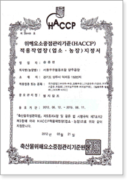
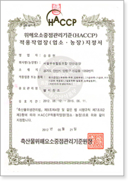
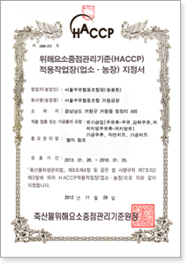
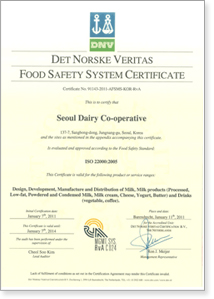
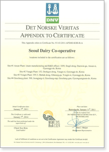

기업소개
우유로 세상을 건강하게!
초일류 유제품 전문기업 서울우유
HACCP
HACCP란 “Hazard Analysis Critical Control Points”의 머리글자로서, 일명 “해썹”이라 부르며 식품의약품안전처에서는 이를 “안전관리인증기준”으로 번역하고 있습니다. HACCP은 위해 분석(HA)와 중요 관리점(CCP)으로 구성되어 있는데, HA는 위해 가능성이 있는 요소를 찾아 분석, 평가하는 것이며, CCP는 해당 위해 요소를 방지, 제거하고 안전성을 확보하기 위하여 중점적으로 다루어야 할 관리점을 말합니다
  
ISO
ISO 22000(식품 안전 경영 시스템)이란?
식품의 모든 취급 단계에서 발생할 수 있는 위해 요소를 효과적으로 관리하기 위하여 ISO/TC34/WG8 주도로 ISO 회원국 및 CODEX, GFS(국제식품안전협회), BRC 등 식품 공급 기관이 공동으로 개발한 국제 규격이며, 식품 공급 사슬 내의 모든 이해 관계자들이 적용할 수 있도록 CODEX의 HACCP 원칙과 ISO 경영 시스템을 통합한 인증 규격으로써 식품 안전 위해 요소 관리 능력을 실증하기 위한 식품 안전 경영 시스템의 요구 사항을 규정한 제도입니다.
 